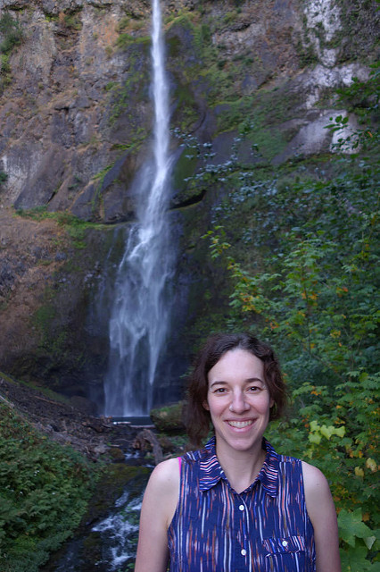

In summer 2018, I started an (undergrad/grad/postdoc) project on neural nets and knot invariants. Inspired by work of Hughes on quasipositivity of knots and neural nets, our objective was to understand the construction of neural networks in theory, and to implement a preliminary neural network that can predict common knot invariants given data about a knot. We constructed a functional feed-forward neural network in Python, and were able to successfully predict whether a knot was alternating or not using the numerical and logical data of other knot invariants, together with a vectorized version of a braid representative for each knot in the study. In 2019 we have continued this project; the focus is now on implementing a Markov chain in order to generate larger ensembles of braid representatives in order to obtain a better training set for our study. In the future we would like to make the neural network more robust and to predict different knot invariants, or possibly properties with greater relevance to biology.
I was an RTG Lovett Instructor of Mathematics in my previous position at Rice. I taught undergrad classes in graph theory and combinatorics, abstract algebra, calculus and a graduate class in algebraic topology (homology and cohomology). I also taught a special undergraduate research course (see below).
Math 499 was an undergraduate research seminar I taught at Rice where students had the opportunity to explore research topics, and come up with problems and proofs of their own. During the 2015-2016 year the topic was combinatorial knot theory, particularly problems revolving around symmetric unions and Fox n-colorings. In the spring we also explored topics in topological data analysis. This program was part of the NSF Geometry RTG at Rice. Some of the students from this research group are currently preparing their work for publication.
I also taught this class in Fall 2014 and Spring 2015. In the fall, the topic was topological data analysis; this covered assorted techniques in basic data science along with newer methods like persistent homology. In the spring, the topic was combinatorial knot theory, with a focus on fibered knots and the Alexander polynomial.
Over the course of the spring semester, several students developed programs that implemented the Kauffman state sum formula for the Alexander polynomial (which was part of the focus of our study). My own Python implementation of this algorithm (with instructions) is available here.
While I was a graduate student at the University of Texas, I gained a lot of experience with many types of calculus instruction, both as an instructor of record and a teaching assistant. I was also in the Supplemental Instruction program.
Math Circles. My very favorite outreach activity is from my grad school days, when I was the 2011-2012 coordinator of the Saturday Morning Math Group, which is the University of Texas's version of a math circle for middle and high schoolers. It's a major program, with many speakers annually and activities like the AMC/AIME exams -- it was a lot of work, and tons of fun.
Association for Women in Math. At Rice, I was the faculty sponsor of the local AWM chapter. The Rice AWM chapter has lots of activities, for example the ``Girls Exploring Math and Science" (GEMS) day for girl scouts at the Houston Museum of Natural Science. I've co-organized and spoken in the Sonia Kovalevsky Day with the University of Texas chapter of the AWM.
Outreach & REU talks. I've talked and lead activities at the Sam Houston State University REU, and given a public lecture on group theory at the Austin Convention Center. At Davis, I've volunteered at Picnic Day, at STEM for Girls Workshops, and in the M-PACT program. I also gave a recent talk in the Texas State Math Camp .
email: moorea14 at vcu dot edu
office: Harris Hall 4149
office hours: TBD
Postal mail:
Dr. Allison H. Moore
Department of Mathematics & Applied Mathematics
Virginia Commonwealth University
1015 Floyd Avenue | Box 842014
Richmond, VA 23284-2014
